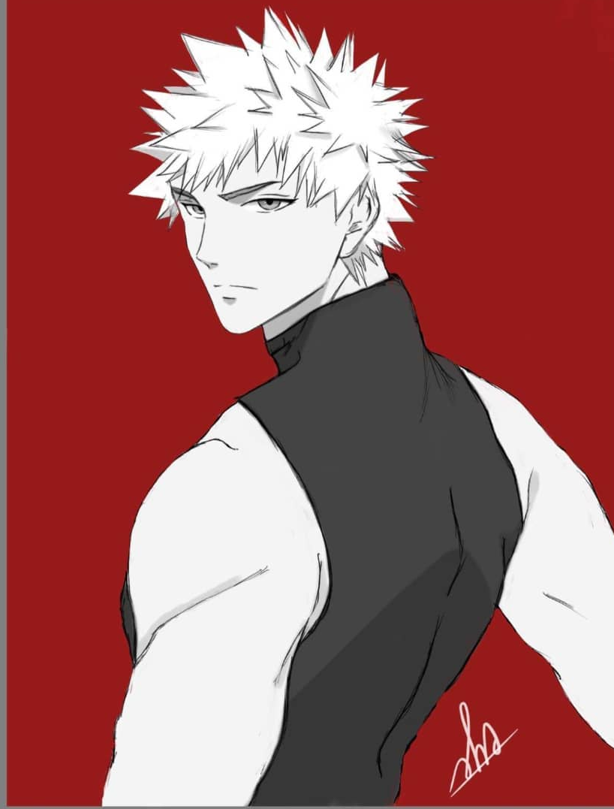
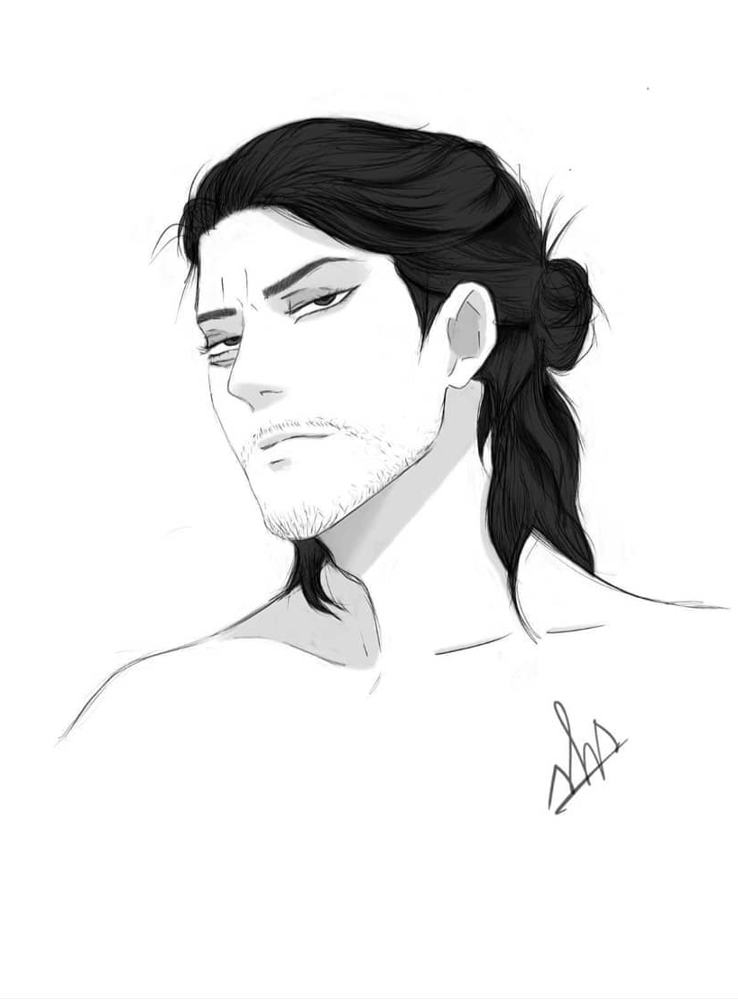
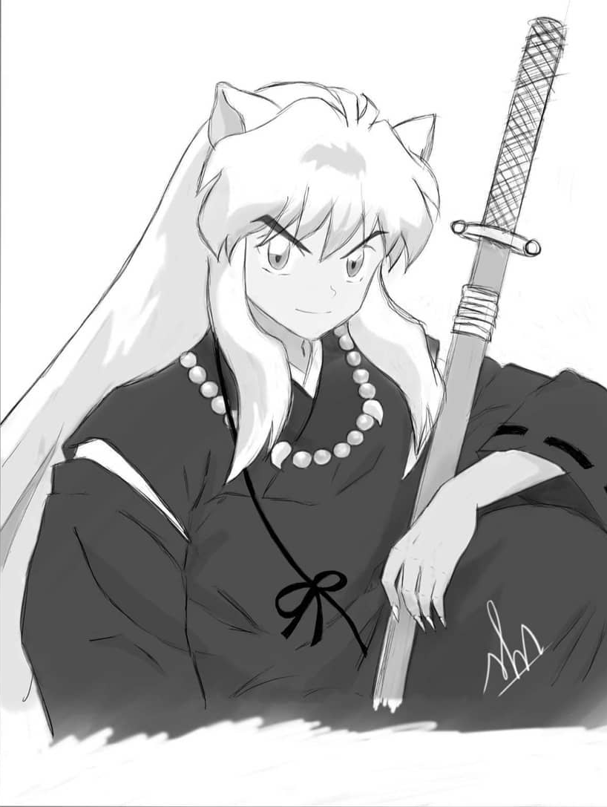
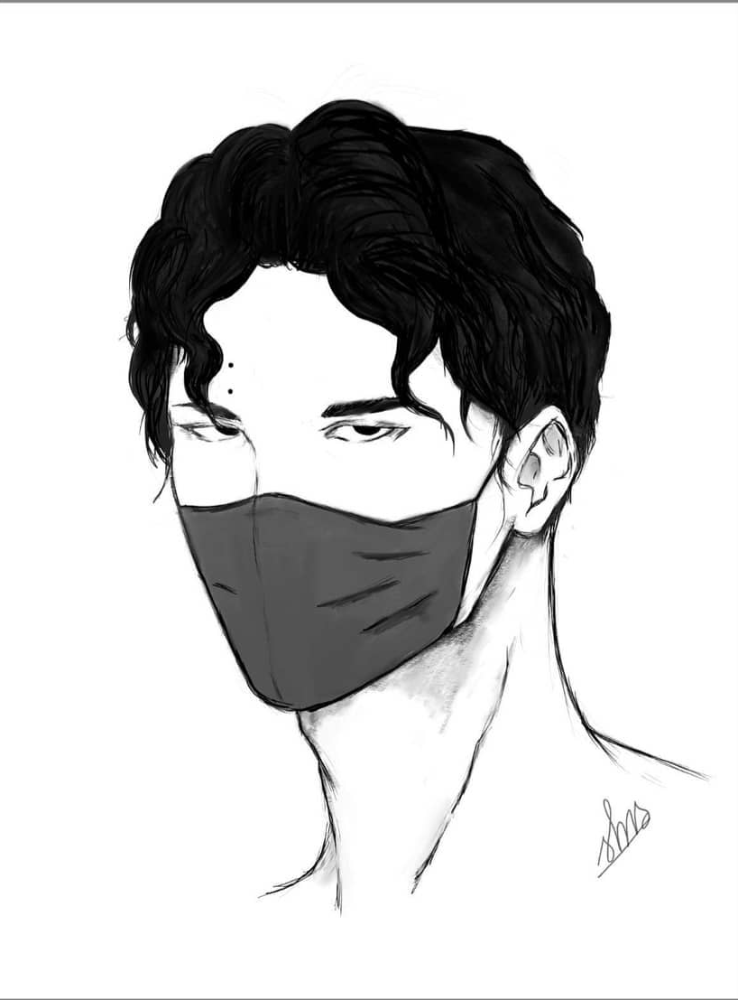
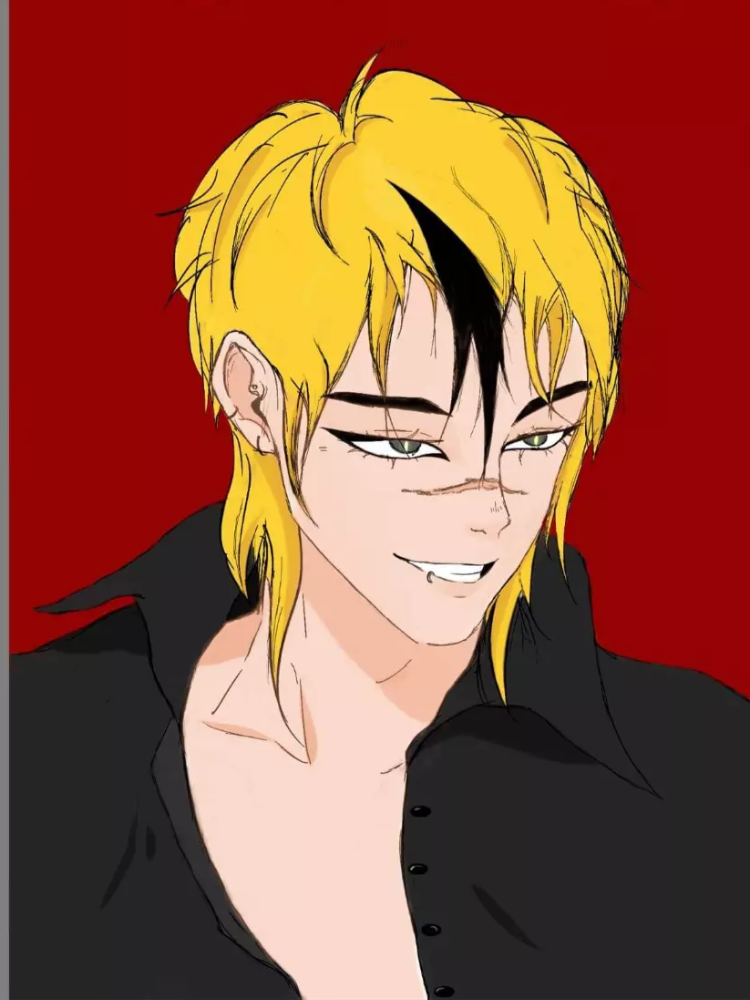
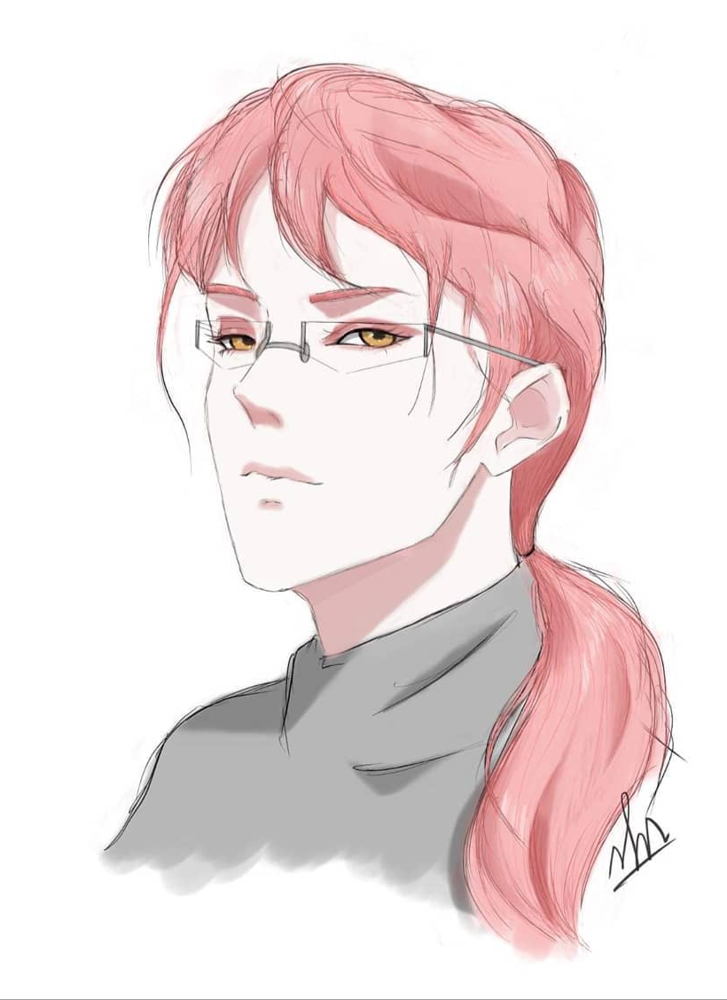

2D illustrator working in ink, line, and colour — building character portraits one careful stroke at a time.
I'm Suhada — a fine art student at the University of Dhaka, and a 2D artist who spends most of her free hours drawing faces that don't exist yet. My work sits between careful ink linework and expressive colour, usually built around a single character and the mood a good line can carry.
Three years in, my process is still the same one I started with: rough gesture first, then the line that actually matters, then colour only where it earns its place. I move between finished colour pieces and looser monochrome studies depending on what the piece is asking for.
Outside of coursework, I take on character commissions, fan art, and original portrait studies — always looking for the version of a face that feels a little more alive than the last one.





Every piece starts loose — rough shapes and a pose, worked out fast until the character's weight feels right before a single clean line is drawn.
The real drawing happens here. Confident, deliberate linework in Procreate and Audodesk, refining expression and silhouette until the face reads clearly on its own.
Colour goes on last, and only where the piece calls for it — flat fields, a single strong background tone, and just enough shading to hold the form.
Open to character commissions, illustration collaborations, and portfolio work. Based in Dhaka — happy to work with clients anywhere.